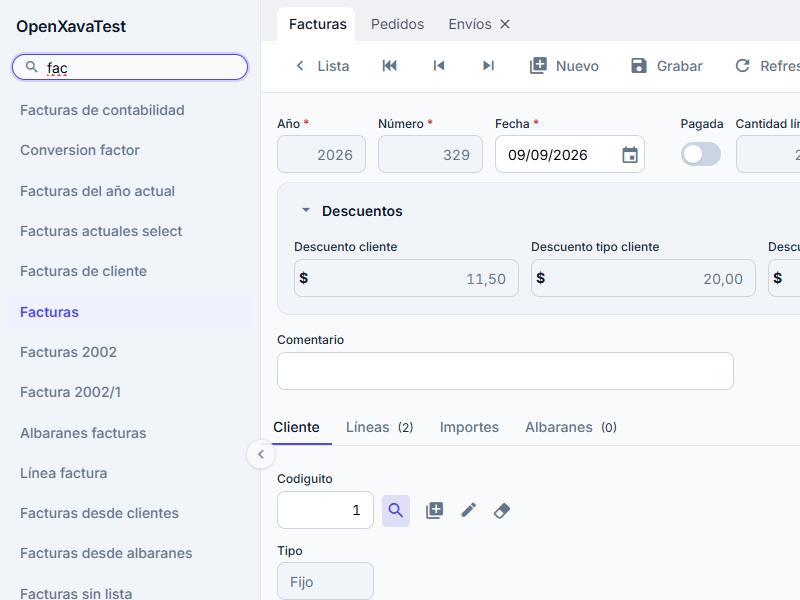
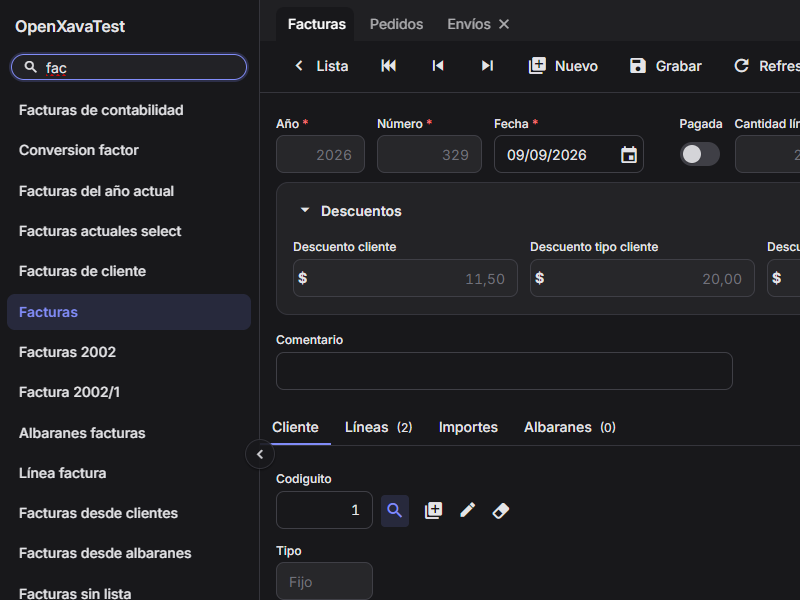
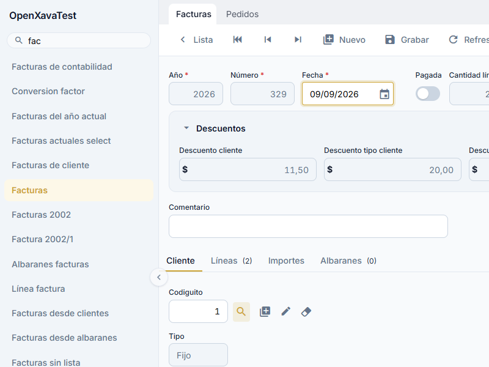
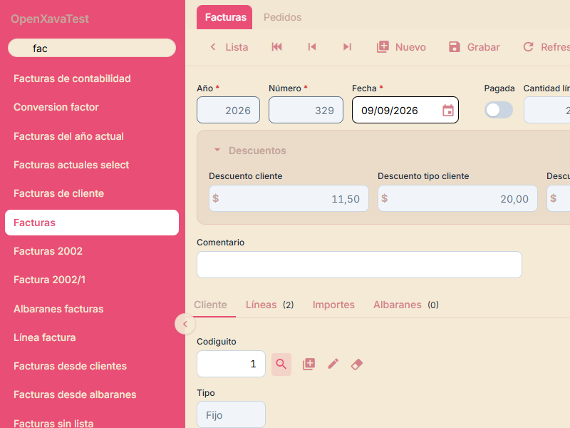
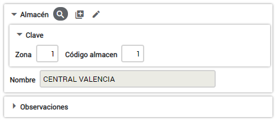
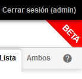
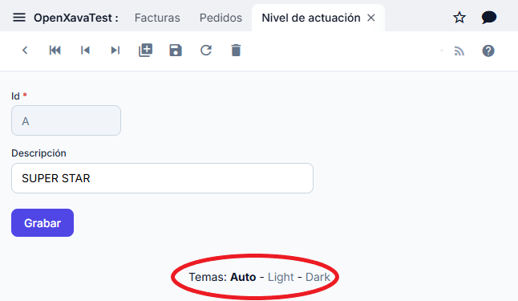

OpenXava 8.0 incluye tres estilos visuales. El tema por defecto es Auto, que cambia automáticamente entre claro y oscuro según la preferencia del sistema operativo (prefers-color-scheme). También puedes forzar Light o Dark explícitamente:


Para escoger uno edita el archivo xava.properties de la carpeta properties de tu proyecto y pon valor a la entrada styleCSS:
# Visual style
# styleCSS=auto.css # Por defecto: sigue la preferencia del SO
# styleCSS=light.css
styleCSS=dark.css
Si no especificas la entrada styleCSS, se usa auto.css por defecto.
Para crear un nuevo estilo crea tu propio archivo CSS en la carpeta src/main/webapp/xava/style de tu proyecto y apunta a él en la propiedad styleCSS de xava.properties.
Si simplemente quieres una pequeña modificación de un estilo existente, puedes extender ese estilo. Mira los CSS para los estilos disponibles en GitHub. Por ejemplo, si quieres el estilo Light pero con un color de acento dorado para los botones principales, los anillos de foco y los estados de hover, crea un archivo dorado.css en src/main/webapp/xava/style con este contenido:
/* dorado.css */
@import 'light.css';
:root {
--accent-color: #cda434;
--accent-color-hover: #b8902a;
--accent-soft: #fdf8e8;
}
Fíjate que usamos @import 'light.css' para extender el estilo Light. Simplemente redefinimos --accent-color y sus variables complementarias. Este único cambio afecta a los botones principales, los anillos de foco, los estados de hover, el componente switch, el acento del calendario y la selección del menú de módulos. Ahora cambio el valor de styleCSS en xava.properties:
styleCSS=dorado.cssPara obtener este resultado:

Por otra parte, para definir tu propio esquema de colores, no sólo un refinamiento, extiende directamente de base.css. Por ejemplo, para definir un estilo Rosa crea un rosa.css como este:
/* rosa.css */
@import 'base.css';
:root {
--mi-rosa: #E94E77;
--mi-rosa-oscuro: #D68189;
--mi-beis: #F4EAD5;
--mi-marron: #C6A49A;
/* Marca */
--accent-color: var(--mi-rosa);
--accent-color-hover: var(--mi-rosa-oscuro);
--accent-soft: #fce4ec;
/* Menú de módulos de la izquierda */
--modules-list-color: var(--mi-beis);
--modules-list-background: var(--mi-rosa);
--modules-list-selected-color: white;
/* Fondos y etiquetas */
--background: var(--mi-beis);
--color: var(--mi-marron);
/* Marcos */
--frame-background: rgba(198, 164, 154, 0.2);
--frame-border: var(--mi-rosa-oscuro);
/* Acciones */
--action-color: var(--mi-rosa-oscuro);
--action-hover-color: var(--mi-rosa);
--action-hover-background: white;
}
Fíjate como extendemos de base.css y definimos el color de marca y los colores para las partes principales de la interfaz. Con sólo el código de arriba obtienes:

Sólo tienes que definir unos pocos colores y todos los demás se derivan a partir de ellos, así tienes un esquema de colores consistente con poco esfuerzo. Además, tienes la opción de definir individualmente el color para cada detalle de la interfaz, echa un vistazo al archivo base.css para ver todas las variables CSS disponibles, más de 200.
La forma más sencilla de personalizar el estilo visual de tu aplicación es redefinir --accent-color. Esta única variable controla los botones principales, los anillos de foco, los estados de hover, el switch booleano, el acento del calendario, la selección del menú de módulos y más. Solo necesitas añadir unas líneas al archivo custom.css de tu proyecto (ver más abajo) o crear tu propio tema extendiendo light.css o dark.css:
:root {
--accent-color: #0d9488; /* Tu color de marca */
--accent-color-hover: #0f766e; /* Una variante más oscura para hover */
--accent-soft: #f0fdfa; /* Un tinte muy claro para fondos de hover */
}
Tres variables son suficientes: --accent-color para el acento principal, --accent-color-hover para el estado de hover (normalmente un tono más oscuro) y --accent-soft para fondos sutiles de hover (un tinte muy claro del color de acento).
OpenXava 8.0 usa un sistema de design tokens definido en base.css. Todos los tokens son propiedades personalizadas CSS (variables) que puedes sobreescribir en tu propio CSS. Los grupos principales de tokens son:
Echa un vistazo al archivo base.css para ver todos los tokens disponibles.
Pero no sólo los colores, puedes refinar cualquier aspecto de la interfaz: márgenes, fuentes, bordes, etc. Por ejemplo, si quieres que los marcos tengan esquinas menos redondeadas y una sombra sutil, puedes añadir estas líneas a tu CSS:
.ox-frame {
border-radius: var(--radius-sm);
box-shadow: var(--elevation-1);
}
De esta manera, los marcos se visualizarán así:

Puedes modificar cualquier cosa de la interfaz gráfica, echa un vistazo a base.css para ver todas las opciones disponibles. Por supuesto, si vas a cambiar muchas cosas una opción es definir tu propio CSS desde cero, sin extender de base.css.
Desde la versión 4.5 podemos añadir y modificar estilos de la aplicación mediante el fichero custom.css en src/main/webapp/xava/style. Esto afecta sólo a tu aplicación. Es una forma fácil de cambiar el estilo sin tener que crear un nuevo tema.
Para sobreescribir un estilo ya existente, basta con añadir el nombre del estilo y definirlo en nuestro fichero. Poniendo:
body {
font-size: 13px;
}
.ox-list-pair, .ox-list-odd {
height: 36px;
}
Cambiamos el tamaño de la letra de toda nuestra aplicación y la altura de las filas en la lista. Mira en base.css para ver todas las clases CSS disponibles.
Aquí tienes un par de trucos/consejos CSS.
Estilizar campos @ReadOnly de forma única
input[disabled] {
background: black;
color: white;
}
Ten en cuenta que en las colecciones de elementos los campos de solo lectura se renderizan como elementos simples, no como inputs deshabilitados, por lo que este selector solo aplica a los campos de formulario en modo detalle.
Añadir row-xxx a @Tab
A veces querrás extender el estilo "row-highlight" existente en la definición de @Tab. Aquí tienes una forma de añadir, por ejemplo, "row-red" con un color diferente al pasar el ratón por encima.
tr.row-red {
background: red;
}
tr .row-red:hover {
background: yellow;
}
Quitar la visualización de Aplicación y Módulo entre el menú principal y el cuerpo (libera espacio en pantalla)
#module_description {
display: none;
}
Quitar los checkboxes de la vista de lista
.ox-list-header input[type="checkbox"] {
display: none;
}
.ox-list-pair input[type="checkbox"] {
display: none;
}
.ox-list-odd input[type="checkbox"] {
display: none;
}
Quitar los checkboxes de un módulo específico
Los cambios anteriores son globales en toda tu aplicación. Puedes hacerlos específicos a un módulo incluyendo los nombres de Aplicación y Módulo como parte del string. Por ejemplo, el nombre de mi Aplicación es: KitBase y tengo un módulo llamado Dashboard. Como la lista de Dashboard es una lista de Colecciones, mi entrada en custom.css se ve así:
.ox_KitBase_Dashboard__collection_scroll input[type="checkbox"] {
display: none;
}
Si fuera una lista estándar de propiedades, la entrada se vería así:
.ox_KitBase_Dashboard__list_scroll input[type="checkbox"] {
display: none;
}
*¡Nota el doble guión bajo entre el nombre del módulo y el resto del string!*
Cambiar el color de fondo del hover en modo lista
.ox-list-pair:hover, .ox-list-odd:hover {
background: var(--list-row-hover-background);
}
Si queremos añadir nuestros propios elementos a la página para que aparezcan siempre visibles en nuestra aplicación podemos hacerlo en src/main/webapp/naviox/indexExt.jsp de nuestro proyecto, deberías crear la carpeta naviox y el archivo indexExt.jsp. Esto se incluye al final de la página, pero usando CSS podemos colocarlo en cualquier parte de la pantalla.
Por ejemplo, si queremos poner un cartelito de BETA en la esquina superior derecha de la pantalla, así:

Podemos poner en nuestro indexExt.jsp:
BETA
Y después posicionarlo añadiendo lo siguiente a custom.css:
#beta {
position: absolute;
right: -65px;
top: 5px;
color: white;
font-size: 120%;
font-weight: bold;
transform: rotate(45deg);
background: red;
padding: 50px 50px 5px 50px;
z-index: -10;
}
El usuario tiene la posibilidad de escoger el estilo para el mismo con un selector de temas abajo en la página:

Para determinar los temas disponibles has de enumerarlos en la propiedad themes de xava.properties:
themes=auto.css, light.css, dark.css
Si quieres quitar el selector de temas completamente define themes como vacía, o simplemente no la definas:
# Vacío para desactivar el selector de temas
themes=